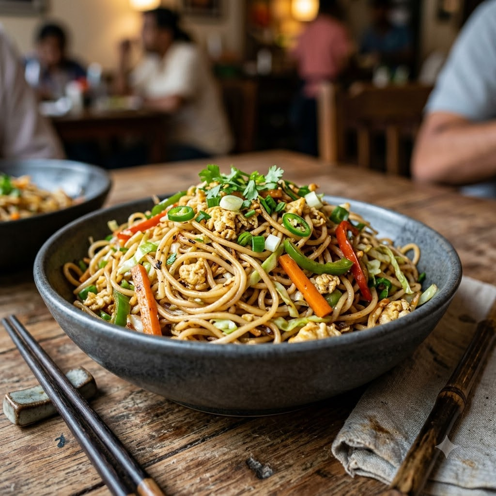

Egg Hakka Noodles

Egg Hakka Noodles
Chef Magic – Sauté Auto 16 min — Serves 3
Eggetarian • Everyday • Indo-Chinese
🧑🍳 Chef Magic🍽 Serves 3
Ingredients
- 200g hakka noodles, boiled and drained
- 3 eggs, lightly beaten
- 1 carrot, julienned
- 1 capsicum, julienned
- 1/2 cup shredded cabbage
- 2 spring onions, chopped
- 2 cloves garlic (lehsun), minced
- 2 tbsp soy sauce
- 1 tsp vinegar
- 1/2 tsp black pepper (kali mirch)
- 2 tbsp oil
- Salt to taste
Method
1In Chef Magic, add 1 tbsp oil; select Sauté (Speed 2–4, ~130–160°C) and scramble the eggs for 2 minutes until just set. Remove and set aside.
2Add the remaining oil and garlic; sauté for 1 minute until fragrant.
3Add the carrot, capsicum and cabbage; stir-fry for 3 minutes until just tender-crisp.
4Add the boiled noodles, soy sauce, vinegar, pepper and salt; toss on Sauté for 4 minutes until well combined.
5Fold in the scrambled egg and spring onions; toss for 1 minute more and serve hot.
Tip: Scrambling the egg separately and folding it in at the end keeps it in distinct soft curds instead of disappearing into the noodles.